<<!DOCTYPE html>
<html lang="ja">
<head>
<meta charset="utf-8">
<meta name="viewport" content="width=device-width, initial-scale=1">
<title>Jumping Nerds | 陸上競技部 選手紹介</title>
<link href="https://fonts.googleapis.com/css2?family=Bricolage+Grotesque:wght@600;800&family=Covered+By+Your+Grace&family=Zen+Kaku+Gothic+New:wght@400;700&display=swap" rel="stylesheet">
<style>
:root{
  --paper:#0a0a0a; --grid:#2a2a2a; --ink:#f3f3ec; --muted:#a8a8a0;
  --hl:#ffe14d; --red:#ff7a66; --card:#121212;
  --chalk:"Covered By Your Grace","Segoe Print","Bradley Hand",cursive;
  --display:"Bricolage Grotesque","Zen Kaku Gothic New",system-ui,sans-serif;
  --body:"Zen Kaku Gothic New","Hiragino Sans","Yu Gothic",system-ui,sans-serif;
}
*{box-sizing:border-box}
html{scroll-behavior:smooth}
body{margin:0;font-family:var(--body);color:var(--ink);background:var(--paper);line-height:1.7}
.wrap{max-width:1040px;margin:0 auto;padding:0 20px}
header.hero{padding:56px 0 8px}
h1{font-family:var(--chalk);font-weight:400;margin:0;line-height:.9;color:var(--ink);transform:rotate(-2deg);transform-origin:left;filter:url(#chalk)}
h1 span{display:block}
h1 .the{font-size:clamp(28px,5vw,48px);margin-left:.6em}
h1 .j,h1 .n{font-size:clamp(64px,15vw,150px);letter-spacing:.02em}
h1 .n{margin-left:.5em}
h1.logo{transform:none;filter:none;line-height:0}
h1.logo img{display:block;width:min(100%,460px);height:auto;margin-left:-4%}
.sub{color:var(--muted);max-width:34em;margin:18px 0 0}
.arc{width:100%;height:auto;margin-top:8px;overflow:visible;filter:url(#chalk)}
.arc path.trace{fill:none;stroke:var(--ink);stroke-width:3;stroke-dasharray:6 7;stroke-dashoffset:0}
.arc path.ground{stroke:var(--ink);stroke-width:2}
.arc text{font:22px var(--chalk);fill:var(--muted)}
.arc .dot{fill:var(--hl)}
.arc .dot{offset-path:path("M40 150 Q 300 -60 560 150");offset-distance:0%;animation:fly 2.2s .3s cubic-bezier(.3,.1,.5,1) forwards}
@keyframes fly{to{offset-distance:100%}}
@media (prefers-reduced-motion:reduce){.arc .dot{animation:none;offset-distance:100%}}
.toolbar{display:flex;flex-wrap:wrap;gap:8px;margin:36px 0 20px;align-items:center}
.toolbar button{font:inherit;font-size:14px;padding:6px 16px;border:2px solid var(--ink);background:transparent;color:var(--ink);border-radius:999px;cursor:pointer}
.toolbar button[aria-pressed="true"]{background:var(--ink);color:var(--paper)}
.toolbar button:focus-visible,.card:focus-visible,dialog button:focus-visible{outline:3px solid var(--red);outline-offset:2px}
.count{margin-left:auto;color:var(--muted);font-size:14px}
.meetlink{display:inline-block;margin-top:16px;padding:8px 20px;background:var(--hl);color:#14213d;font-weight:700;text-decoration:none;border:2px solid var(--ink)}
.meetlink:hover{transform:translate(-3px,-3px);box-shadow:5px 5px 0 var(--ink)}
.meetlink:focus-visible{outline:3px solid var(--red);outline-offset:2px}
.grid{display:grid;grid-template-columns:repeat(auto-fill,minmax(230px,1fr));gap:18px;padding-bottom:64px}
.card{all:unset;box-sizing:border-box;cursor:pointer;background:var(--card);border:2px solid var(--ink);padding:16px;display:block;position:relative}
.card:hover{transform:translate(-3px,-3px);box-shadow:5px 5px 0 var(--ink)}
.photo{aspect-ratio:4/3;background:var(--grid);margin-bottom:12px;display:grid;place-items:center;overflow:hidden;position:relative}
.photo img{width:100%;height:100%;object-fit:cover}
.photo .no{font-family:var(--display);font-weight:800;font-size:64px;color:var(--ink);opacity:.18}
.tag{position:absolute;left:0;bottom:0;background:var(--hl);color:#14213d;font-size:12px;font-weight:700;padding:2px 10px}
.card h2{font-family:var(--display);font-size:22px;margin:0;line-height:1.2}
.card .kana{font-size:12px;color:var(--muted);margin:0 0 8px}
.card .pb{display:flex;justify-content:space-between;align-items:baseline;border-top:1px dashed var(--muted);padding-top:8px;font-size:13px;color:var(--muted)}
.card .pb b{font-family:var(--display);font-size:22px;color:var(--red)}
dialog{border:2px solid var(--ink);background:var(--card);color:var(--ink);padding:0;max-width:560px;width:calc(100% - 32px)}
dialog::backdrop{background:rgba(10,18,40,.6)}
.d-body{padding:24px}
.d-body h2{font-family:var(--display);font-size:32px;margin:0}
.d-body dl{display:grid;grid-template-columns:7em 1fr;gap:6px 12px;margin:16px 0;font-size:15px}
.d-body dt{color:var(--muted)}
.d-body dd{margin:0}
.close{float:right;font:inherit;border:2px solid var(--ink);background:var(--hl);color:#14213d;padding:2px 14px;cursor:pointer}
.note{background:var(--paper);border-left:4px solid var(--hl);padding:10px 14px;margin:0}
footer{padding:28px 0;border-top:2px solid var(--ink);color:var(--muted);font-size:13px}
</style>
</head>
<body>
<svg width="0" height="0" aria-hidden="true" style="position:absolute">
  <filter id="chalk" x="-5%" y="-5%" width="110%" height="110%">
    <feTurbulence type="fractalNoise" baseFrequency="0.04" numOctaves="2" seed="3" result="warp"/>
    <feDisplacementMap in="SourceGraphic" in2="warp" scale="4" result="d"/>
    <feTurbulence type="fractalNoise" baseFrequency="0.9" numOctaves="2" seed="8" result="g"/>
    <feColorMatrix in="g" type="matrix" values="0 0 0 0 0  0 0 0 0 0  0 0 0 0 0  2.4 0 0 0 -0.4" result="mask"/>
    <feComposite in="d" in2="mask" operator="in"/>
  </filter>
</svg>
<div class="wrap">
  <header class="hero">
    <h1 class="logo"></h1>
    <p class="sub">陸上競技という物語を紡ぐ、陸上狂の、陸上狂による、陸上狂のためのチーム。選手をクリックすると詳細が見られます。</p>
   
    <svg class="arc" viewBox="0 0 600 190" aria-hidden="true">
  <style>
    .arc { background-color: #1a1a1a; border-radius: 8px; }
    .trace { fill: none; stroke: #fff; stroke-width: 1.5; stroke-dasharray: 4 4; opacity: .5; }
    .ground { stroke: #fff; stroke-width: 2; }
    text { fill: #fff; font-size: 14px; font-family: sans-serif; }
    .pose path, .pose circle { stroke: #fff; stroke-width: 3; stroke-linecap: round; stroke-linejoin: round; fill: none; }
    .pose circle { fill: #fff; }
    
  </style>

  <!-- コース・背景 -->
  <path class="trace" d="M40 150 Q 300 -60 560 150"/>
  <line class="ground" x1="0" y1="150" x2="600" y2="150"/>
  <text x="30" y="175">踏切</text>
  <text x="530" y="175">着地</text>

  <!-- 着地の波紋(1.9秒後に広がる) -->
  <circle cx="560" cy="150" r="0" fill="none" stroke="#fff" stroke-width="2" opacity="0">
    <animate attributeName="r" from="0" to="25" begin="1.9s" dur="0.5s" fill="freeze"/>
    <animate attributeName="opacity" from="0.8" to="0" begin="1.9s" dur="0.5s" fill="freeze"/>
  </circle>

  <!-- ランナー -->
  <g>
    <!-- 移動(軌道に沿って2秒) -->
    <animateMotion dur="2s" fill="freeze" calcMode="spline"
      keyTimes="0;1" keySplines="0.42 0 0.58 1"
      path="M40 150 Q 300 -60 560 150"/>

    <!-- ★大きさ:scale(1.5) の数字を変えると全体が拡大・縮小 -->
    <g transform="scale(3)">
      <g>
        <!-- 着地時のつぶれ(1.2 0.7 が強さ、0.94 と 0.97 がタイミング) -->
        <animateTransform attributeName="transform" type="scale"
          values="1 1;1 1;1.2 0.7;1 1" keyTimes="0;0.94;0.97;1"
          dur="2s" fill="freeze"/>

        <!-- ポーズ1:踏切(0〜0.4秒) -->
        <g class="pose">
          <set attributeName="opacity" to="0" />
          <circle cx="-2" cy="-18" r="4"/>
          <path d="M -2 -14 L 0 -4 L 8 8
                   M 0 -4 L -8 6
                   M -2 -10 L 6 -2
                   M -2 -10 L -8 -6"/>
        </g>
        
        <!-- ポーズ2:空中(0.4〜1.85秒)膝つきバージョン -->
        <g class="pose" opacity="0">
          <set attributeName="opacity" to="1" begin="0.4s"/>
          <set attributeName="opacity" to="0" begin="1.5s"/>
          <circle cx="2" cy="-20" r="4"/>
          <path d="M 2 -16 L -2 -4
                   M -2 -4 L 6 -2 L 10 4
                   M -2 -4 L -7 0 L -12 -2
                   M -2 -12 L 8 -10
                   M -2 -12 L -6 2"/>
        </g>
        <!-- ポーズ2:空中(0.4〜1.85秒)腰の角度 約120度 -->
        <!-- ポーズ2:空中(0.4〜1.85秒)腰の角度 約120度 -->
<g class="pose" opacity="0">
  <set attributeName="opacity" to="1" begin="1.5s"/>
  <set attributeName="opacity" to="0" begin="1.85s"/>
  <circle cx="-2" cy="-24" r="4"/>
  <path d="M -2 -20 L -2 -8
           M -2 -8 L 6 -3 L 7 3
           M -2 -8 L -7 -3 L -12 -4
           M -2 -17 L 8 -14
           M -2 -17 L -7 -10"/>
</g>
        <!-- ポーズ3:着地(1.85秒〜)足先は y=0 で地面に接する -->
        <g class="pose" opacity="0">
          <set attributeName="opacity" to="1" begin="1.85s"/>
          <circle cx="-4" cy="-18" r="4"/>
          <g class="pose" opacity="0">
  <set attributeName="opacity" to="1" begin="1.85s"/>
  <circle cx="-6" cy="-16" r="4"/>
  <path d="M -6 -12 L -8 -3
           M -8 -3 L 12 -3
           M -6 -9 L 8 -6"/>
</g>
        </g>
      </g>
    </g>
  </g>
</svg>
  </header>
   <a class="meetlink" href="meets.html">大会出場情報を見る</a>
  <div class="toolbar" id="filters" role="group" aria-label="種目で絞り込み"></div>
  <div class="grid" id="grid"></div>
  
  <footer>© Jumping Nerds Track &amp; Field Club(サンプルデータ・架空の選手です)</footer>
</div>

<dialog id="dlg"><div class="d-body" id="dbody"></div></dialog>

<script>
// ▼ 選手データ。ここに1人ずつ足していけば自動でカードが増えます。
// photo に "images/tanaka.jpg" のように書くと写真が表示されます(空なら背番号表示)。
const athletes = [
  {no:1, name:"前村 土温", kana:"まえむら とおん", event:"走幅跳", grade:"3年", height:"176cm", pb:"7m36m", pbLabel:"走幅跳 PB", photo:"", comment:"助走の歩数を毎回ノートに記録して、踏切のズレを0にするのが目標です。"},
  {no:2, name:"安藤 寛峻", kana:"あんどう ひろたか", event:"三段跳", grade:"2年", height:"181cm", pb:"15m53", pbLabel:"三段跳 PB", photo:"", comment:"陸上競技に救われました"},
  {no:3, name:"乃美 裕介", kana:"のうみ ゆうすけ", event:"走幅跳", grade:"4年", height:"168cm", pb:"7m65", pbLabel:"走幅跳 PB", photo:"", comment:"俺一本。"},
  {no:4, name:"磯山 福太郎", kana:"いそやま ふくたろう", event:"三段跳", grade:"1年", height:"172cm", pb:"15.54m", pbLabel:"三段跳 PB", photo:"", comment:"ホップ・ステップ・ジャンプの比率を研究中。先輩に質問しまくっています。"},
  {no:5, name:"金光 将英", kana:"かねみつ しょうえい", event:"三段跳", grade:"4年", height:"174cm", pb:"15m35", pbLabel:"三段跳 PB", photo:"", comment:"ジャンパーにも走力は必須。4×400mリレーのアンカーも担当します。"},
  {no:6, name:"坂口 彰良 ", kana:"さかぐち あきら", event:"三段跳", grade:"3年", height:"162cm", pb:"15m07", pbLabel:"三段跳 PB", photo:"", comment:"おなか痛い"},
  {no:7, name:"水野 文由里 ", kana:"みずの あゆり", event:"走幅跳", grade:"2年", height:"170cm", pb:"6m12", pbLabel:"走幅跳 PB", photo:"", comment:"あゆり一本"},
  {no:8, name:"長谷川 奈穂", kana:"はせがわ なほ", event:"走幅跳", grade:"1年", height:"169cm", pb:"5m62", pbLabel:"走幅跳 PB", photo:"", comment:"長谷川一本"}
];

const events = ["すべて", ...new Set(athletes.map(a => a.event))];
const filters = document.getElementById("filters");
const grid = document.getElementById("grid");
const dlg = document.getElementById("dlg");
const dbody = document.getElementById("dbody");
let current = "すべて";

const esc = s => String(s).replace(/[&<>"]/g, c => ({"&":"&amp;","<":"&lt;",">":"&gt;",'"':"&quot;"}[c]));

function photoHtml(a){
  return a.photo
    ? ``
    : `<span class="no">${a.no}</span>`;
}

function render(){
  const list = athletes.filter(a => current === "すべて" || a.event === current);
  grid.innerHTML = list.map(a => `
    <button class="card" data-no="${a.no}">
      <div class="photo">${photoHtml(a)}<span class="tag">${esc(a.event)}</span></div>
      <h2>${esc(a.name)}</h2>
      <p class="kana">${esc(a.kana)} / ${esc(a.grade)}</p>
      <div class="pb"><span>${esc(a.pbLabel)}</span><b>${esc(a.pb)}</b></div>
    </button>`).join("");
  document.querySelectorAll("#filters button").forEach(b =>
    b.setAttribute("aria-pressed", b.textContent === current));
}

filters.innerHTML = events.map(e => `<button type="button">${esc(e)}</button>`).join("")
  + `<span class="count" id="count"></span>`;
filters.addEventListener("click", e => {
  if (e.target.tagName !== "BUTTON") return;
  current = e.target.textContent;
  render();
  document.getElementById("count").textContent =
    `${grid.children.length}人`;
});

grid.addEventListener("click", e => {
  const card = e.target.closest(".card");
  if (!card) return;
  const a = athletes.find(x => x.no == card.dataset.no);
  dbody.innerHTML = `
    <button class="close" onclick="dlg.close()">閉じる</button>
    <h2>${esc(a.name)}</h2>
    <p class="kana" style="margin:0;color:var(--muted)">${esc(a.kana)}</p>
    <dl>
      <dt>背番号</dt><dd>${a.no}</dd>
      <dt>種目</dt><dd>${esc(a.event)}</dd>
      <dt>学年</dt><dd>${esc(a.grade)}</dd>
      <dt>身長</dt><dd>${esc(a.height)}</dd>
      <dt>${esc(a.pbLabel)}</dt><dd><b style="color:var(--red)">${esc(a.pb)}</b></dd>
    </dl>
    <p class="note">${esc(a.comment)}</p>`;
  dlg.showModal();
});
dlg.addEventListener("click", e => { if (e.target === dlg) dlg.close(); });

render();
document.getElementById("count").textContent = `${athletes.length}人`;
</script>
</body>
</html>
